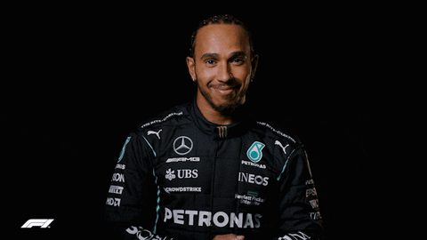

FORMULA 1


Lewis Carl Davidson Larbalestier Hamilton (Stevenage, Hertfordshire; 7 de enero de 1985)
es un piloto britanico de automovilismo. En Formula 1 desde 2007 hasta 2012,
fue piloto de la escuderia McLaren, con la cual fue campeon en 2008 y subcampeon en 2007.
A partir de 2013, se convirtio en piloto de Mercedes, resultando campeon
en 2014, 2015, 2017, 2018, 2019, 2020, igualando los 7 titulos mundiales de Michael Schumacher,
y subcampeon en 2016 y 2021. Ha logrado alzarse con más de 103 victorias en
Grandes Premios a lo largo de su carrera en la Formula 1, superando en 2020 el record de
victorias en la historia de la competicion.
En su primera temporada en Formula 1, Hamilton establecio numerosos records
y termino segundo en el Campeonato de Formula 1 en 2007 empatado a puntos con
su companero de escuderia Fernando Alonso y a solo un punto de Kimi Raikkonen.
Tras su segundo titulo mundial en 2014, fue nombrado sello deportivo de la BBC del anio.
